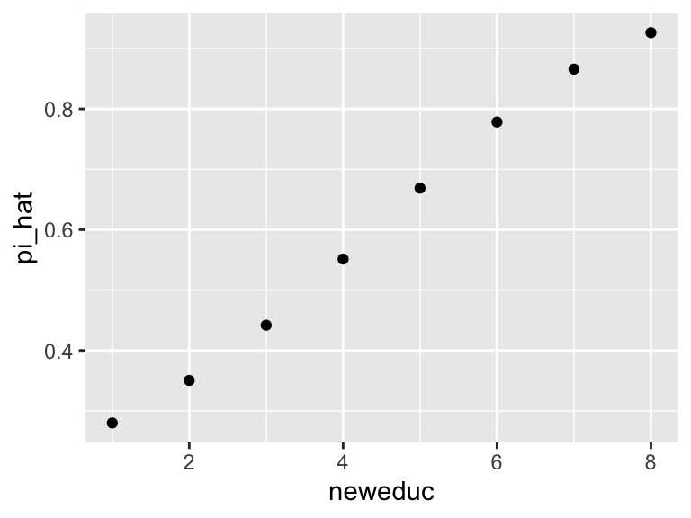

Chapter 3 Week 3: Adding Predictors
So far, we have discussed several major ideas:
- Maximum likelihood to obtain point estimates of model parameters and the invariance property to transform those estimates into quantities of interest. In this framework, we can use the parametric bootstrap to create confidence intervals and the predictive distribution to understand fitted models.
- Bayesian inference to obtain posterior beliefs (i.e., distributions) of model parameters. In most applied cases, we will simulate from the posterior. We can transform those simulations to obtain posterior distributions of the quantities of interest. We can use the posterior predictive distribution to understand the fit.
- We’ve discussed the tools above in the context of the Bernoulli, Poisson, and exponential models. Using the toothpaste cap, binary survey responses, civilian casualties, and government survival data.
Today, we’re going to focus on two narrow parts of models and explore how two current tools generalize to the regression context.
- The linear predictor \(X\beta\).
- The inverse link function.
- How the [posterior] predictive distribution generalizes to regression.
- How quantities of interest generalize to regression.
For this week, we’ll need the following packages:
- rstan/rstanarm
- tidybayes
- Zelig;
devtools::install_github('IQSS/Zelig')
3.1 Review: The Normal Model
To fix ideas, we are going to re-develop the linear model from POS 5746.
We imagine a continuous outcome \(y = \{y_1, y_1,..., y_n\}\) and a set of predictors or “explanatory variables” \(x_1 = \{x_{11}, x_{21}, ..., x_{n1}\}, x_2 = \{x_{12}, x_{22}, ..., x_{n2}\}, ..., x_k = \{x_{1k}, x_{2k}, ..., x_{nk}\}\).
The notation \(y_i\) refers to the \(i\)th observation of the outcome variable.
The notation \(x_{ij}\) refers to the \(i\)th observation of the \(j\)th control variable.
The we write the linear regression model as
\[ y_i = \beta_0 + \beta_1 x_{i1} + \beta_2 x_{i2} + \beta_k x_{ik} + r_i. \]
We might then assume that the \(r_i\)s follow a normal distribution, so that \(r_i \sim N(0, \sigma^2)\) for all \(i\).
The we can define \(\mu_i = \beta_0 + \beta_1 x_{i1} + \beta_2 x_{i2} + \beta_k x_{ik}\) and see that
\[ y_i \sim N(\mu_i, \sigma^2). \] Taking the expectation, we have \(E(y_i \mid x_1, x_2, ... , x_n) = \mu_i = \beta_0 + \beta_1 x_{i1} + \beta_2 x_{i2} + \beta_k x_{ik}\). This is just a conditional average (the average of the outcome conditional on the explanatory variables). Sometimes we refer to this quantity as \(\hat{y}_i\).
There are two important features of this model that I want to explore: the distribution or “stochastic component” and the linear predictor of the model.
3.1.1 Distribution
This model uses the normal distribution to describe the unexplained variation in \(y_i - \hat{y}_i\). POS 5746 focuses (mostly) on models that assume a normal distribution for the outcome. King (1998) calls this the “stochastic” component of the model.
For now, simply note that we are not restricted to a normal model, we could easily adapt the model to use a Bernoulli, exponential, or Poisson distribution, for example.
3.1.2 Linear Predictor
The linear predictor \(\beta_0 + \beta_1 x_{i1} + \beta_2 x_{i2} + \beta_k x_{ik}\) is critically important. So we should spend some time to get familiar with it.
For the sake of this exercise, the values of the \(\beta\)s and the \(x_{ij}\)s are arbitrary,
# devtools::install_github('IQSS/Zelig')
data(macro, package = "Zelig")
set.seed(1234)
small_macro <- macro %>%
select(unem, gdp, capmob, trade) %>%
sample_n(5) %>%
mutate(across(.fns = signif, digits = 2))
kableExtra::kable(small_macro, format = "markdown")| unem | gdp | capmob | trade | |
|---|---|---|---|---|
| 284 | 1.5 | 5.2 | -1 | 88 |
| 336 | 2.0 | 4.8 | -1 | 27 |
| 101 | 2.7 | 3.2 | -2 | 74 |
| 111 | 6.8 | 5.3 | 0 | 94 |
| 133 | 2.6 | 5.4 | -1 | 33 |
fit <- lm(unem ~ gdp + capmob + trade, data = small_macro)
signif(coef(fit), digits = 2)## (Intercept) gdp capmob trade
## 19.0000 -2.4000 4.5000 0.0027In-Class Exercise For the \(\beta\)s and the \(x_{ij}\)s above, compute each \(\mu_i\) and \(r_i = y_i - \mu_i\).
Now, let’s bind the explanatory variables into a matrix, so that
\[ X = [x_1, x_2, ..., x_k] = \begin{bmatrix} x_{11} & x_{12} &\dots & x_{1k}\\ x_{21} & x_{22} &\dots & x_{2k}\\ \vdots & \vdots &\ddots & \vdots\\ x_{n1} & x_{n2} & \dots & x_{nk} \end{bmatrix}. \] And let’s bind the \(\beta\)s into a column-vector, so that
\[ \beta = \begin{bmatrix} \beta_{1} \\ \beta_{2} \\ \vdots\\ \beta_{k} \end{bmatrix}. \]
\(\beta = [\beta_0, \beta_1, \beta_2, ..., \beta_k]\).
Notice that we have a \(n \times (k + 1)\) matrix \(X\) and a \((k + 1) x 1\) matrix \(\beta\). I content that the matrix multiplication \(\mu = X\beta\) is identical to \(\mu_i = \beta_0 + \beta_1 x_{i1} + \beta_2 x_{i2} + \beta_k x_{ik}\).
In-Class Exercise For the \(\beta\)s and the \(x_{ij}\)s above, compute each \(\mu = X\beta\) and \(r = y - \mu\).
We can confirm with R.
y <- small_macro$unem
X <- cbind(1,
small_macro$gdp,
small_macro$capmob,
small_macro$trade)
print(X)## [,1] [,2] [,3] [,4]
## [1,] 1 5.2 -1 88
## [2,] 1 4.8 -1 27
## [3,] 1 3.2 -2 74
## [4,] 1 5.3 0 94
## [5,] 1 5.4 -1 33beta <- matrix(signif(coef(fit), digits = 2), ncol = 1)
print(beta)## [,1]
## [1,] 19.0000
## [2,] -2.4000
## [3,] 4.5000
## [4,] 0.0027mu <- X%*%beta; mu## [,1]
## [1,] 2.2576
## [2,] 3.0529
## [3,] 2.5198
## [4,] 6.5338
## [5,] 1.6291r <- small_macro$unem - mu; r## [,1]
## [1,] -0.7576
## [2,] -1.0529
## [3,] 0.1802
## [4,] 0.2662
## [5,] 0.9709From now on, we can just write…
- \(X_i\beta\) rather than \(\beta_0 + \beta_1 x_{i1} + \beta_2 x_{i2} + \beta_k x_{ik}\) (returns a scalar \(\mu_i\))
- \(X\beta\) rather than \(\beta_0 + \beta_1 x_{1} + \beta_2 x_{2} + \beta_k x_{k}\) (returns a vector \(\mu\))
3.1.3 Fitting the Normal-Linear Model
3.1.3.1 Maximum Likelihood
It turns out that the usual least-squares solution from POS 5746 is the maximum likelihood estimate of \(\beta\). And the RMS of the residuals is the ML estimator of \(\sigma\).
beta_hat <- solve(t(X)%*%X)%*%t(X)%*%y
print(beta_hat, digits = 2)## [,1]
## [1,] 18.8277
## [2,] -2.3766
## [3,] 4.5184
## [4,] 0.0027sigma_hat <- sqrt(sum((y - X%*%beta_hat)^2))
print(sigma_hat, digits = 2)## [1] 1.6fit <- lm(unem ~ gdp + capmob + trade, data = small_macro)
arm::display(fit)## lm(formula = unem ~ gdp + capmob + trade, data = small_macro)
## coef.est coef.se
## (Intercept) 18.83 11.64
## gdp -2.38 1.77
## capmob 4.52 2.33
## trade 0.00 0.03
## ---
## n = 5, k = 4
## residual sd = 1.64, R-Squared = 0.85We can get confidence intervals with the parametric bootstrap.
# get ml estimates
fit <- lm(unem ~ gdp + capmob + trade, data = small_macro)
mu_hat <- predict(fit) # same as X%*%beta_hat
sigma_hat <- sqrt(sum(residuals(fit)^2))
# do parametric bootstrap
n_bs <- 100
bs_est <- matrix(NA, ncol = length(coef(fit)), nrow = n_bs)
for (i in 1:n_bs) {
bs_y <- rnorm(nrow(small_macro), mean = mu_hat, sd = sigma_hat)
bs_fit <- update(fit, bs_y ~ .)
bs_est[i, ] <- coef(bs_fit)
}
# compute the quantiles for each coef
apply(bs_est, 2, quantile, probs = c(0.05, 0.95))## [,1] [,2] [,3] [,4]
## 5% 0.6518702 -4.9998081 1.690274 -0.04557350
## 95% 35.5920062 0.4865889 7.987606 0.063633543.1.3.2 Bayesian
The stan_glm() function allows us to easily get posterior simulations for the coefficients (and \(\sigma\)) for the normal linear model.
library(rstanarm); options(mc.cores = parallel::detectCores())
stan_fit <- stan_glm(unem ~ gdp + capmob + trade, data = small_macro,
family = "gaussian",
chains = 1,
prior = NULL,
prior_intercept = NULL)print(stan_fit)## stan_glm
## family: gaussian [identity]
## formula: unem ~ gdp + capmob + trade
## observations: 5
## predictors: 4
## ------
## Median MAD_SD
## (Intercept) 19.3 11.7
## gdp -2.4 1.7
## capmob 4.5 2.3
## trade 0.0 0.0
##
## Auxiliary parameter(s):
## Median MAD_SD
## sigma 1.8 0.9
##
## ------
## * For help interpreting the printed output see ?print.stanreg
## * For info on the priors used see ?prior_summary.stanreg3.1.4 Applied Example
# load data
cg <- read_csv("data/parties.csv") %>%
glimpse()## Rows: 555
## Columns: 10
## $ country <chr> "Albania", "Albania", "Albania", "Argentina", "Ar…
## $ year <dbl> 1992, 1996, 1997, 1946, 1951, 1954, 1958, 1960, 1…
## $ average_magnitude <dbl> 1.00, 1.00, 1.00, 10.53, 10.53, 4.56, 8.13, 4.17,…
## $ eneg <dbl> 1.106929, 1.106929, 1.106929, 1.342102, 1.342102,…
## $ enep <dbl> 2.190, 2.785, 2.870, 5.750, 1.970, 1.930, 2.885, …
## $ upper_tier <dbl> 28.57, 17.86, 25.80, 0.00, 0.00, 0.00, 0.00, 0.00…
## $ en_pres <dbl> 0.00, 0.00, 0.00, 2.09, 1.96, 1.96, 2.65, 2.65, 3…
## $ proximity <dbl> 0.00, 0.00, 0.00, 1.00, 1.00, 0.20, 1.00, 0.20, 1…
## $ social_heterogeneity <chr> "Bottom 3rd of ENEG", "Bottom 3rd of ENEG", "Bott…
## $ electoral_system <chr> "Single-Member District", "Single-Member District…# fitting model with ls/ml
f <- enep ~ eneg*log(average_magnitude) + eneg*upper_tier + en_pres*proximity
fit <- lm(f, data = cg)
arm::display(fit, detail = TRUE)## lm(formula = f, data = cg)
## coef.est coef.se t value Pr(>|t|)
## (Intercept) 2.81 0.20 14.31 0.00
## eneg 0.19 0.08 2.47 0.01
## log(average_magnitude) 0.33 0.11 2.88 0.00
## upper_tier 0.05 0.01 4.98 0.00
## en_pres 0.35 0.07 4.84 0.00
## proximity -3.42 0.38 -8.98 0.00
## eneg:log(average_magnitude) 0.08 0.06 1.28 0.20
## eneg:upper_tier -0.02 0.00 -3.37 0.00
## en_pres:proximity 0.80 0.15 5.34 0.00
## ---
## n = 555, k = 9
## residual sd = 1.59, R-Squared = 0.30# fitting model with Stan
fit <- stan_glm(f, data = cg, chains = 1)print(fit)## stan_glm
## family: gaussian [identity]
## formula: enep ~ eneg * log(average_magnitude) + eneg * upper_tier + en_pres *
## proximity
## observations: 555
## predictors: 9
## ------
## Median MAD_SD
## (Intercept) 2.8 0.2
## eneg 0.2 0.1
## log(average_magnitude) 0.3 0.1
## upper_tier 0.0 0.0
## en_pres 0.3 0.1
## proximity -3.4 0.4
## eneg:log(average_magnitude) 0.1 0.1
## eneg:upper_tier 0.0 0.0
## en_pres:proximity 0.8 0.1
##
## Auxiliary parameter(s):
## Median MAD_SD
## sigma 1.6 0.0
##
## ------
## * For help interpreting the printed output see ?print.stanreg
## * For info on the priors used see ?prior_summary.stanreg3.2 Quantities of Interest
We’ve now got three models:
- the normal model
- the logit model
- the Poisson model
In only the case of the normal distribution are the parameters directly interpretable. The meaning of the coefficients in the case of the logit and Poisson model is especially unclear.
Thus, we are interested not in the coefficients themselves, but in other “quantities of interest.”
3.2.1 Expected Value
The first quantity of interest is the expected value \(E(y \mid X_s)\).
Imagine a particular scenario of interest \(X_s\). For the logit model, we can compute the expected value of \(y\) for that scenario using \(\hat{E}(y \mid X_p) = \hat{\pi}_s = \text{logit}^{-1}(X_s\hat{\beta})\). For the Poisson model, it’s \(\hat{E}(y \mid X_p) = \hat{\lambda}_s = e^{X_s\hat{\beta}}\).
Let’s see how this would work with the scobit data.
scobit <- haven::read_dta("data/scobit.dta") %>%
filter(newvote != -1)
f <- newvote ~ poly(neweduc, 2, raw = TRUE) + closing + poly(age, 2, raw = TRUE) + south + gov
fit <- glm(f, data = scobit, family = binomial)First, let’s create the scenario of interest.
# create the scenario of interest X_s (but a data frame)
scenario <- tibble(
neweduc = median(scobit$neweduc),
closing = median(scobit$closing),
age = median(scobit$age),
south = median(scobit$south),
gov = median(scobit$gov)) %>%
glimpse()## Rows: 1
## Columns: 5
## $ neweduc <dbl> 5
## $ closing <dbl> 30
## $ age <dbl> 40
## $ south <dbl> 0
## $ gov <dbl> 0# now use the predict() function to get pi_hat
pi_hat <- predict(fit, newdata = scenario, type = "response")So when all the \(x\)s are set to their median, the estimated probability of voting is pi_hat.
We could all compute the expected value for all values of a single variable with other variables set to their median.
scenarios <- tibble(
neweduc = sort(unique(scobit$neweduc)),
closing = median(scobit$closing),
age = median(scobit$age),
south = median(scobit$south),
gov = median(scobit$gov)) %>%
glimpse()## Rows: 8
## Columns: 5
## $ neweduc <dbl> 1, 2, 3, 4, 5, 6, 7, 8
## $ closing <dbl> 30, 30, 30, 30, 30, 30, 30, 30
## $ age <dbl> 40, 40, 40, 40, 40, 40, 40, 40
## $ south <dbl> 0, 0, 0, 0, 0, 0, 0, 0
## $ gov <dbl> 0, 0, 0, 0, 0, 0, 0, 0scenarios$pi_hat <- predict(fit, newdata = scenarios, type = "response")
ggplot(scenarios, aes(x = neweduc, y = pi_hat))+
geom_point()
3.2.2 First Difference
Perhaps the most important quantity of interest, though, is the first difference. Imagine two scenario of interest \(X_{lo}\) and \(X_{hi}\). We then compute the difference \(\Delta\) between the expected values \(X_{lo}\) and \(X_{hi}\), so that \(\hat{\Delta} = \hat{E}(y \mid X_{hi}) - \hat{E}(y \mid X_{lo})\). This works for (almost?) all models we’ll see in this course.
lo_scenario <- tibble(
neweduc = quantile(scobit$neweduc, 0.10), # 25th percentile
closing = median(scobit$closing),
age = median(scobit$age),
south = median(scobit$south),
gov = median(scobit$gov)) %>%
glimpse()## Rows: 1
## Columns: 5
## $ neweduc <dbl> 3
## $ closing <dbl> 30
## $ age <dbl> 40
## $ south <dbl> 0
## $ gov <dbl> 0hi_scenario <- tibble(
neweduc = quantile(scobit$neweduc, 0.90), # 75th percentile
closing = median(scobit$closing),
age = median(scobit$age),
south = median(scobit$south),
gov = median(scobit$gov)) %>%
glimpse()## Rows: 1
## Columns: 5
## $ neweduc <dbl> 7
## $ closing <dbl> 30
## $ age <dbl> 40
## $ south <dbl> 0
## $ gov <dbl> 0fd_hat <- predict(fit, newdata = hi_scenario, type = "response") -
predict(fit, newdata = lo_scenario, type = "response")
print(fd_hat)## 1
## 0.4240654This shows that if we move education from it minimum value (1) to its maximum value (8), the expected value goes up by 0.70. Since the expected value here is a probability, we can say that the chance of voting goes up by 42 percentage points (from 44% to 87%).